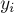
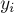
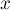
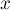
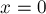
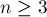
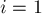
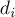
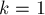
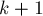

MAXimal
добавлено: 17 Jul 2009 23:00
редактировано: 15 Jul 2014 18:05
Содержание [скрыть]
Теория Шпрага-Гранди. Ним
Введение
Теория Шпрага-Гранди — это теория, описывающая так называемые равноправные (англ. "impartial") игры двух игроков, т.е. игры, в которых разрешённые ходы и выигрышность/проигрышность зависят только от состояния игры. От того, какой именно из двух игроков ходит, не зависит ничего: т.е. игроки полностью равноправны.
Кроме того, предполагается, что игроки располагают всей информацией (о правилах игры, возможных ходах, положении соперника).
Предполагается, что игра конечна, т.е. при любой стратегии игроки рано или поздно придут в проигрышную позицию, из которой нет переходов в другие позиции. Эта позиция является проигрышной для игрока, который должен делать ход из этой позиции. Соответственно, она является выигрышной для игрока, пришедшего в эту позицию. Понятно, ничейных исходов в такой игре не бывает.
Иными словами, такую игру можно полностью описать ориентированным ациклическим графом: вершинами в нём являются состояния игры, а рёбрами — переходы из одного состояния игры в другое в результате хода текущего игрока (повторимся, в этом первой и второй игрок равноправны). Одна или несколько вершин не имеют исходящих рёбер, они является проигрышными вершинами (для игрока, который должен совершать ход из такой вершины).
Поскольку ничейных исходов не бывает, то все состояния игры распадаются на два класса: выигрышные и проигрышные. Выигрышные — это такие состояния, что найдётся ход текущего игрока, который приведёт к неминуемому поражению другого игрока даже при его оптимальной игре. Соответственно, проигрышные состояния — это состояния, из которых все переходы ведут в состояния, приводящие к победе второго игрока, несмотря на "сопротивление" первого игрока. Иными словами, выигрышным будет состояние, из которого есть хотя бы один переход в проигрышное состояние, а проигрышным является состояние, из которого все переходы ведут в выигрышные состояния (или из которого вообще нет переходов).
Наша задача — для любой заданной игры провести классификацию состояний этой игры, т.е. для каждого состояния определить, выигрышное оно или проигрышное.
Теорию таких игр независимо разработали Роланд Шпраг (Roland Sprague) в 1935 г. и Патрик Майкл Гранди (Patrick Michael Grundy) в 1939 г.
Игра "Ним"
Эта игра является одним из примеров описываемых выше игр. Более того, как мы увидим чуть позже, любая из равноправных игр двух игроков на самом деле эквивалентна игре "ним" (англ. "nim"), поэтому изучение этой игры автоматически позволит нам решать все остальные игры (впрочем, об этом позже).
Исторически, эта игра была популярна ещё в древние времена. Вероятно, игра берёт своё происхождение в Китае — по крайней мере, китайская игра "Jianshizi" очень похожа на ним. В Европе первые упоминания о ниме относятся к XVI в. Само название "ним" придумал математик Чарлз Бутон (Charles Bouton), который в 1901 г. опубликовал полный анализ этой игры. Происхождение названия "ним" доподлинно неизвестно.
Описание игры
Игра "ним" представляет из себя следующую игру.
Есть несколько кучек, в каждой из которых по нескольку камней. За один ход игрок может взять из какой-нибудь одной кучки любое ненулевое число камней и выбросить их. Соответственно, проигрыш наступает, когда ходов больше не осталось, т.е. все кучки пусты.
Итак, состояние игры "ним" однозначно описывается неупорядоченным набором натуральных чисел. За один ход разрешается строго уменьшить любое из чисел (если в результате число станет нулём, то оно удаляется из набора).
Решение нима
Решение этой игры опубликовал в 1901 г. Чарлз Бутон (Charles L. Bouton), и выглядит оно следующим образом.
Теорема. Текущий игрок имеет выигрышную стратегию тогда и только тогда, когда XOR-сумма размеров кучек отлична от нуля. В противном случае текущий игрок находится в проигрышном состоянии. (XOR-суммой чисел  называется выражение , где
называется выражение , где  — операция побитового исключающего или)
— операция побитового исключающего или)
Доказательство.
Основная суть приведённого ниже доказательства — в наличии симметричной стратегии для противника. Мы покажем, что, оказавшись в состоянии с нулевой XOR-суммой, игрок не сможет выйти из этого состояния — при любом его переходе в состояние с ненулевой XOR-суммой у противника найдётся ответный ход, возвращающий XOR-сумму обратно в ноль.
Приступим теперь к формальному доказательству (оно будет конструктивным, т.е. мы покажем, как именно выглядит симметричная стратегия противника — какой именно ход нужно будет ему совершать).
Доказывать теорему будем по индукции.
Для пустого нима (когда размеры всех кучек равны нулю) XOR-сумма равна нулю, и теорема верна.
Пусть теперь мы хотим доказать теорему для некоторого состояния игры, из которого есть хотя бы один переход. Пользуясь предположением индукции (и ацикличностью игры) мы считаем, что теорема доказана для всех состояний, в которые мы можем попасть из текущего.
Тогда доказательство распадается на две части: если XOR-сумма  в текущем состоянии , то надо доказать, что текущее состояние проигрышно, т.е. все переходы из него ведут в состояния с XOR-суммой . Если же , то надо доказать, что найдётся переход, приводящий нас в состояние с .
в текущем состоянии , то надо доказать, что текущее состояние проигрышно, т.е. все переходы из него ведут в состояния с XOR-суммой . Если же , то надо доказать, что найдётся переход, приводящий нас в состояние с .
- Пусть
 , тогда мы хотим доказать, что текущее состояние — проигрышно. Рассмотрим любой переход из текущего состояния нима: обозначим через
, тогда мы хотим доказать, что текущее состояние — проигрышно. Рассмотрим любой переход из текущего состояния нима: обозначим через  номер изменяемой кучки, через
номер изменяемой кучки, через  (
( ) — размеры кучек до хода, через  () — после хода. Тогда, пользуясь элементарными свойствами функции , мы имеем:
) — размеры кучек до хода, через  () — после хода. Тогда, пользуясь элементарными свойствами функции , мы имеем:Но поскольку , то это означает, что . Значит, новое состояние будет иметь ненулевую XOR-сумму, т.е., согласно базе индукции, будет выигрышным, что и требовалось доказать.
- Пусть . Тогда наша задача — доказать, что текущее состояние — выигрышно, т.е. из него существует ход в проигрышное состояние (с нулевой XOR-суммой).
Рассмотрим битовую запись числа
. Возьмём старший ненулевой бит, пусть его номер равен  . Пусть
. Пусть  — номер той кучки, у размер которой -ый бит отличен от нуля (такое найдётся, иначе бы в XOR-сумме этот бит не получился бы отличным от нуля).
— номер той кучки, у размер которой -ый бит отличен от нуля (такое найдётся, иначе бы в XOR-сумме этот бит не получился бы отличным от нуля).Тогда, утверждается, искомый ход — это изменить
-ую кучку, сделав её размера .Убедимся в этом.
Сначала надо проверить, что это ход корректный, т.е. что . Однако это верно, поскольку все биты, старшие
-го, у и  совпадают, а в -ом бите у будет ноль, а у будет единица.
совпадают, а в -ом бите у будет ноль, а у будет единица.Теперь посчитаем, какая XOR-сумма получится при этом ходе:
Таким образом, указанный нами ход — действительно ход в проигрышное состояние, а это и доказывает, что текущее состояние выигрышно.
Теорема доказана.
Следствие. Любое состояние ним-игры можно заменить эквивалентным состоянием, состоящим из единственной кучки размера, равного XOR-сумме размеров кучек в старом состоянии.
Иными словами, при анализе нима с несколькими кучками можно посчитать XOR-сумму их размеров, и перейти к анализу нима из единственной кучки размера — как показывает только что доказанная теорема, выигрышность/проигрышность от этого не изменится.
Эквивалентность любой игры ниму. Теорема Шпрага-Гранди
Здесь мы покажем, как любой игре (равноправной игре двух игроков) поставить в соответствие ним. Иными словами, любому состоянию любой игры мы научимся ставить в соответствие ним-кучку, полностью описывающее состояние исходной игры.
Лемма о ниме с увеличениями
Докажем сначала очень важную лемму — лемму о ниме с увеличениями.
А именно, рассмотрим следующий модифицированный ним: всё так же, как и в обычном ниме, однако теперь разрешается дополнительный вид хода: вместо уменьшения, наоборот, увеличить размер некоторой кучки. Если быть более точным, то ход игрока теперь заключается в том, что он либо забирает ненулевое количество камней из какой-нибудь кучки, либо увеличивает размер какой-либо кучки (в соответствии с некими правилами, см. следующий абзац).
Здесь важно понимать, что правила того, как именно игрок может совершать увеличения, нас не интересуют — однако такие правила всё же должны быть, чтобы наша игра по-прежнему была ациклична. Ниже в разделе "Примеры игр" рассмотрены примеры таких игр: "лестничный ним", "nimble-2", "turning turtles".
Повторимся, лемма будет доказана нами вообще для любых игр такого вида — игр вида "ним с увеличениями"; конкретные правила увеличений в доказательстве никак не используются.
Формулировка леммы. Ним с увеличениями эквивалентен обычному ниму, в том смысле, что выигрышность/проигрышность состояния определяется по теореме Бутона согласно XOR-сумме размеров кучек. (Или, иными словами, суть леммы в том, что увеличения бесполезны, их нет смысла применять в оптимальной стратегии, и они никак не меняют выигрышность/проигрышность по сравнению с обычным нимом.)
Доказательство.
Идея доказательства, как и в теореме Бутона — в наличии симметричной стратегии. Мы покажем, что увеличения ничего не меняют, поскольку после того, как один из игроков прибегнет к увеличению, другой сможет симметрично ответить ему.
В самом деле, предположим, что текущий игрок совершает ход-увеличение какой-либо кучки. Тогда его соперник сможет просто ответить ему, уменьшив обратно эту кучку до старого значения — ведь обычные ходы нима у нас по-прежнему могут свободно использоваться.
Таким образом, симметричным ответом на ход-увеличение будет ход-уменьшение обратно до старого размера кучки. Следовательно, после такого ответа игра вернётся обратно к тем же размерам кучек, т.е. игрок, совершивший увеличение, ничего от этого не выиграет. Т.к. игра ациклична, то рано или поздно ходы-увеличения кончатся, и текущему игроку придётся делать ход-уменьшение, а это и означает, что наличие увеличивающих ходов не меняет ровным счётом ничего.
Теорема Шпрага-Гранди об эквивалентности любой игры ниму
Перейдём теперь к самому главному в данной статье факту — теореме об эквивалентности ниму любой равноправной игры двух игроков.
Теорема Шпрага-Гранди. Рассмотрим любое состояние  некоторой равноправной игры двух игроков. Пусть из него есть переходы в некоторые состояния (где ). Утверждается, что состоянию этой игры можно поставить в соответствие кучку нима некоторого размера  (которая будет полностью описывать состояние нашей игры — т.е. эти два состояния двух разных игр будут эквивалентны). Это число — называется значением Шпрага-Гранди состояния .
некоторой равноправной игры двух игроков. Пусть из него есть переходы в некоторые состояния (где ). Утверждается, что состоянию этой игры можно поставить в соответствие кучку нима некоторого размера  (которая будет полностью описывать состояние нашей игры — т.е. эти два состояния двух разных игр будут эквивалентны). Это число — называется значением Шпрага-Гранди состояния .
Более того, это число можно находить следующим рекурсивным образом: посчитаем значение Шпрага-Гранди по каждому переходу , и тогда выполняется:
где функция от множества чисел возвращает наименьшее неотрицательное число, не встречающееся в этом множестве (название "mex" — это сокращение от "minimum excludant").
Таким образом, мы можем, стартуя от вершин без исходящих рёбер, постепенно посчитать значения Шпрага-Гранди для всех состояний нашей игры. Если значение Шпрага-Гранди какого-либо состояния равно нулю, то это состояние проигрышно, иначе — выигрышно.
Доказательство. Доказывать теорему будем по индукции.
Для вершин, из которых нет ни одного перехода, величина согласно теореме будет получаться как от пустого множества, т.е. . Но, в самом деле, состояние без переходов — это проигрышное состояние, и ему действительно должна соответствовать ним-кучка размера  .
.
Рассмотрим теперь любое состояние , из которого есть переходы. По индукции мы можем считать, что для всех состояний , в которые мы можем перейти из текущего состояния, значения уже подсчитаны.
Посчитаем величину . Тогда, согласно определению функции , мы получаем, что для любого числа  в промежутке найдётся хотя бы один соответствующий переход в какое-то из -ых состояние. Кроме того, могут существовать также дополнительные переходы — в состояния со значениями Гранди, большими .
в промежутке найдётся хотя бы один соответствующий переход в какое-то из -ых состояние. Кроме того, могут существовать также дополнительные переходы — в состояния со значениями Гранди, большими .
Это означает, что текущее состояние эквивалентно состоянию ниму с увеличениями с кучкой размера : в самом деле, у нас есть переходы из текущего состояния в состояния с кучками всех меньших размеров, а также могут быть переходы в состояния больших размеров.
Следовательно, величина действительно является искомым значением Шпрага-Гранди для текущего состояния, что и требовалось доказать.
Применение теоремы Шпрага-Гранди
Опишем наконец целостный алгоритм, применимый к любой равноправной игре двух игроков для определения выигрышности/проигрышности текущего состояния .
Функция, которая каждому состоянию игры ставит в соответствие ним-число, называется функцией Шпрага-Гранди.
Итак, чтобы посчитать функцию Шпрага-Гранди для текущего состояния некоторой игры, нужно:
- Выписать все возможные переходы из текущего состояния.
- Каждый такой переход может вести либо в одну игру, либо в сумму независимых игр.
В первом случае — просто посчитаем функцию Гранди рекурсивно для этого нового состояния.
Во втором случае, когда переход из текущего состояния приводит в сумму нескольких независимых игр — рекурсивно посчитаем для каждой из этих игр функцию Гранди, а затем скажем, что функция Гранди суммы игр равна XOR-сумме значений этих игр.
- После того, как мы посчитали функцию Гранди для каждого возможного перехода — считаем от этих значений, и найденное число — и есть искомое значение Гранди для текущего состояния.
- Если полученное значение Гранди равно нулю, то текущее состояние проигрышно, иначе — выигрышно.
Таким образом, по сравнению с теоремой Шпрага-Гранди здесь мы учитываем то, что в игре могут быть переходы из отдельных состояний в суммы нескольких игр. Чтобы работать с суммами игр, мы сначала заменяем каждую игру её значением Гранди, т.е. одной ним-кучкой некоторого размера. После этого мы приходим к сумме нескольких ним-кучек, т.е. к обычному ниму, ответ для которого, согласно теореме Бутона — XOR-сумма размеров кучек.
Закономерности в значениях Шпрага-Гранди
Очень часто при решении конкретных задач, когда требуется научиться считать функцию Шпрага-Гранди для заданной игры, помогает изучение таблиц значений этой функции в поисках закономерностей.
Во многих играх, кажущихся весьма трудными для теоретического анализа, функция Шпрага-Гранди на практике оказывается периодичной, либо же имеющей очень простой вид, который легко заметить "на глаз". В подавляющем большинстве случаев увиденные закономерности являются верными, и при желании доказываемыми с помощью математической индукции.
Впрочем, далеко не всегда функция Шпрага-Гранди содержит простые закономерности, а для некоторых, даже весьма простых по формулировке, игр вопрос о наличии таких закономерностей до сих пор открыт (например, "Grundy's game" ниже).
Примеры игр
Для наглядной демонстрации теории Шпрага-Гранди, разберём несколько задач.
Особо следует обратить внимание на задачи "лестничный ним", "nimble-2", "turning turtles", в которой демонстрируется нетривиальное сведение исходной задачи к ниму с увеличениями.
"Крестики-крестики"
Условие. Рассмотрим клетчатую полоску размера клеток. За один ход игроку надо поставить один крестик, но при этом запрещено ставить два крестика рядом (в соседние клетки). Проигрывает тот, кто не может сделать ход. Сказать, кто выиграет при оптимальной игре.
Решение. Когда игрок ставит крестик в какую-либо клетку, можно считать, что вся полоска распадается на две независимые половинки: слева от крестика и справа от него. При этом сама клетка с крестиком, а также её левый и правый сосед уничтожаются — т.к. в них больше ничего нельзя будет поставить.
Следовательно, если мы занумеруем клетки полоски от  до
до  , то, поставив крестик в позицию , полоска распадётся на две полоски длины и
, то, поставив крестик в позицию , полоска распадётся на две полоски длины и  , т.е. мы переходим в сумму двух игр и . Если же крестик ставится в позицию или , то это особый случай — мы просто перейдём в состояние
, т.е. мы переходим в сумму двух игр и . Если же крестик ставится в позицию или , то это особый случай — мы просто перейдём в состояние  .
.
Таким образом, функция Гранди имеет вид (для ):
Т.е. получается как от множества, состоящего из числа , а также всевозможных значений выражения .
Итак, мы получили решение этой задачи за  .
.
На самом деле, посчитав на компьютере таблицу значений для первой сотни значений , можно увидеть, что, начиная с , последовательность становится периодичной с периодом . Эта закономерность сохраняется и дальше (что, вероятно, можно доказать по индукции).
"Крестики-крестики — 2"
Условие. Снова игра ведётся на полоске клеток, и игроки по очереди ставят по одному крестику. Выигрывает тот, кто поставит три крестика подряд.
Решение. Заметим, что если 2"> и мы оставили после своего хода два крестика рядом или через один пробел, то противник следующим ходом выиграет. Следовательно, если один игрок поставил где-то крестик, то другому игроку невыгодно ставить крестик в соседние с ним клетки, а также в соседние с соседними (т.е. на расстоянии и  ставить невыгодно, это приведёт к поражению).
ставить невыгодно, это приведёт к поражению).
Тогда решение получается практически аналогичным предыдущей задаче, только теперь крестик удаляет у каждой половинки не по одной, а сразу по две клетки.
"Пешки"
Условие. Есть поле  , на котором в первом и третьем ряду стоят по пешек — белых и чёрных, соответственно. Первый игрок ходит белыми пешками, второй — чёрными. Правила хода и удара — стандартные шахматные, за исключением того, что бить (при наличии такой возможности) обязательно.
, на котором в первом и третьем ряду стоят по пешек — белых и чёрных, соответственно. Первый игрок ходит белыми пешками, второй — чёрными. Правила хода и удара — стандартные шахматные, за исключением того, что бить (при наличии такой возможности) обязательно.
Решение. Проследим, что происходит, когда одна пешка сделает ход вперёд. Следующим ходом противник будет обязан съесть её, затем мы будем обязаны съесть пешку противника, затем снова он съест, и, наконец, наша пешка съест вражескую пешку и останется, "упёршись" в пешку противника. Таким образом, если мы в самом начале пошли пешкой в колонке , то в результате три колонки доски фактически уничтожатся, и мы перейдём к сумме игр размера и . Граничные случаи  и приводят нас просто к доске размера .
Таким образом, мы получили выражения для функции Гранди, аналогичные рассмотренной выше задаче "Крестики-крестики".
"Lasker's nim"
Условие. Имеется кучек камней заданных размеров. За один ход игрок может взять любое ненулевое число камней из какой-либо кучки, либо же разделить какую-либо кучку на две непустые кучки. Проигрывает тот, кто не может сделать ход.
Решение. Записывая оба вида переходов, легко получить функцию Шпрага-Гранди как:
Однако можно построить таблицу значений для малых и увидеть простую закономерность:
Здесь видно, что для чисел, равных или по модулю  , и для чисел, равных
, и для чисел, равных  и по модулю . Доказать это можно по индукции.
и по модулю . Доказать это можно по индукции.
"The game of Kayles"
Условие. Есть кегель, выставленных в ряд. За один удар игрок может выбить либо одну кеглю, либо две рядом стоящие кегли. Выигрывает тот, который выбил последнюю кеглю.
Решение. И когда игрок выбивает одну кеглю, и когда он выбивает две — игра распадается на сумму двух независимых игр.
Нетрудно получить такое выражение для функции Шпрага-Гранди:
Посчитаем для него таблицу для нескольких первых десятков элементов:
Можно заметить, что, начиная с некоторого момента, последовательность становится периодичной с периодом . В дальнейшем эта периодичность также не нарушится.
Grundy's game
Условие. Есть кучек камней, размеры которых мы обозначим через . За один ход игрок может взять какую-либо кучку размера как минимум и разделить её на две непустые кучки неравных размеров. Проигрывает тот, кто не может сделать ход (т.е. когда размеры всех оставшихся кучек меньше либо равны двум).
Решение. Если 1">, то все эти несколько кучек, очевидно, — независимые игры. Следовательно, наша задача — научиться искать функцию Шпрага-Гранди для одной кучки, а ответ для нескольких кучек будет получаться как их XOR-сумма.
Для одной кучки эта функция строится также легко, достаточно просмотреть все возможные переходы:
Чем эта игра интересна — тем, что до сих пор для неё не найдено общей закономерности. Несмотря на предположения, что последовательность должна быть периодичной, она была просчитана вплоть до , и периодов в этой области обнаружено не было.
"Лестничный ним"
Условие. Есть лестница с ступеньками (занумерованными от до ), на -ой ступеньке лежит монет. За один ход разрешается переместить некоторое ненулевое число монет с -ой на  -ую ступеньку. Проигрывает тот, кто не может сделать хода.
-ую ступеньку. Проигрывает тот, кто не может сделать хода.
Решение. Если попытаться свести эту задачу к ниму "в лоб", то получится, что ход у нас — это уменьшение одной кучки на сколько-то, и одновременное увеличение другой кучки на столько же. В итоге мы получаем модификацию нима, решить которую весьма сложно.
Поступим по-другому: рассмотрим только ступеньки с чётными номерами: . Посмотрим, как будет меняться этот набор чисел при совершении одного хода.
Если ход делается с чётным , то тогда этот ход означает уменьшение числа . Если же ход делается с нечётным ( 1">), то это означает увеличение .
Получается, что наша задача — это обыкновенный ним с увеличениями с размерами кучек .
Следовательно, функция Гранди от него — это XOR-сумма чисел вида .
"Nimble" и "Nimble-2"
Условие. Есть клетчатая полоска , на которой расположены монет: -ая монета находится в -ой клетке. За один ход игрок может взять какую-то монету и подвинуть её влево на произвольное число клеток, но так, чтобы она не вылезла за пределы полоски. В игре "Nimble-2" дополнительно запрещается перепрыгивать другие монеты (или даже ставить две монеты в одну клетку). Проигрывает тот, кто не может сделать ход.
Решение "Nimble". Заметим, что монеты в этой игре независимы друг от друга. Более того, если мы рассмотрим набор чисел  , то понятно, что за один ход игрок может взять любое из этих чисел и уменьшить его, а проигрыш наступает, когда все числа обращаются в ноль. Следовательно, игра "Nimble" — это обычный ним, и ответом на задачу является XOR-сумма чисел .
, то понятно, что за один ход игрок может взять любое из этих чисел и уменьшить его, а проигрыш наступает, когда все числа обращаются в ноль. Следовательно, игра "Nimble" — это обычный ним, и ответом на задачу является XOR-сумма чисел .
Решение "Nimble-2". Перенумеруем монеты в порядке их следования слева направо. Тогда обозначим через  расстояние от -ой до -ой монеты:
(считая, что ).
Тогда за один игрок может отнять от какого-нибудь некоторое число  , и прибавить это же число к . Таким образом, эта игра — это фактически "лестничный ним" над числами (надо лишь изменить порядок этих чисел на противоположный).
, и прибавить это же число к . Таким образом, эта игра — это фактически "лестничный ним" над числами (надо лишь изменить порядок этих чисел на противоположный).
"Turning turtles" и "Twins"
Условие. Дана клетчатая полоска размера . В каждой клетке стоит либо крестик, либо нолик. За один ход можно взять какой-то нолик и превратить его в крестик.
При этом дополнительно разрешается выбрать одну из клеток слева от изменяемой и изменить в ней значение на противоположное (т.е. нолик заменить на крестик, а крестик — на нолик). В игре "turning turtles" делать это не обязательно (т.е. ход игрока может ограничиваться превращением нолика в крестик), а в "twins" — обязательно.
Решение "turning turtles". Утверждается, что эта игра — это обычный ним над числами  , где — позиция -го нолика (в 1-индексации). Проверим это утверждение.
, где — позиция -го нолика (в 1-индексации). Проверим это утверждение.
- Если игрок просто поменял нолик на крестик, не воспользовавшись дополнительным ходом — то это можно понимать как то, что он просто забрал всю кучку, соответствующую этому нолику. Иными словами, если игрок поменял нолик на крестик в позиции , то тем самым он взял кучку размера и сделал её размер равным нулю.
- Если игрок воспользовался дополнительным ходом, т.е. помимо того, что поменял нолик в позиции на крестик, он ещё изменил клетку в позиции
 , то можно считать, что он уменьшил кучку до размера . Действительно, если в позиции раньше был крестик — то, в самом деле, после хода игрока там станет нолик, т.е. появится кучка размера . А если в позиции раньше был нолик, то после хода игрока эта кучка исчезает — или, что то же самое, появилась вторая кучка точно такого же размера (поскольку в ниме две кучки одинаковых размеров фактически "уничтожают" друг друга).
, то можно считать, что он уменьшил кучку до размера . Действительно, если в позиции раньше был крестик — то, в самом деле, после хода игрока там станет нолик, т.е. появится кучка размера . А если в позиции раньше был нолик, то после хода игрока эта кучка исчезает — или, что то же самое, появилась вторая кучка точно такого же размера (поскольку в ниме две кучки одинаковых размеров фактически "уничтожают" друг друга).
Таким образом, ответ на задачу — это XOR-сумма чисел — координат все ноликов в 1-индексации.
Решение "twins". Все рассуждения, приведённые выше, остаются верны, за исключением того, что хода "обнулить кучку" теперь у игрока нет. Т.е. если мы от всех координат отнимем единицу — то снова игра превратится в обычный ним.
Таким образом, ответ на задачу — это XOR-сумма чисел — координат все ноликов в 0-индексации.
Northcott's game
Условие. Есть доска размера  : строк и
: строк и  столбцов. В каждой строке стоят по две фишки: одна чёрная и одна белая. За один ход игрок может взять любую фишку своего цвета и подвинуть её внутри строки вправо или влево на произвольное число шагов, но не перепрыгивая через другую фишку (и не вставая на неё). Проигрывает тот, кто не может сделать хода.
столбцов. В каждой строке стоят по две фишки: одна чёрная и одна белая. За один ход игрок может взять любую фишку своего цвета и подвинуть её внутри строки вправо или влево на произвольное число шагов, но не перепрыгивая через другую фишку (и не вставая на неё). Проигрывает тот, кто не может сделать хода.
Решение. Во-первых, понятно, что каждая из строк доски образует независимую игру. Поэтому задача сводится к анализу игры в одной строке, а ответом на задачу будет XOR-сумма значений Шпрага-Гранди для каждой из строк.
Решая задачу для одной строки, обозначим через расстояние между чёрной и белой фишкой (которое может меняться от нуля до ). За один ход каждый игрок может либо уменьшить на некоторое произвольное значение, либо, возможно, увеличить его до некоторого значения (увеличения доступны не всегда). Таким образом, эта игра — это "ним с увеличениями", и, как мы уже знаем, увеличения в этой игре бесполезны. Следовательно, функция Гранди для одной строки — это и есть это расстояние .
(Следует заметить, что формально такое рассуждение неполно — т.к. в "ниме с увеличениями" предполагается, что игра конечна, а здесь правила игры позволяют игрокам играть бесконечно долго. Впрочем, бесконечная игра не может иметь места при оптимальной игре — т.к. стоит одному игроку увеличить расстояние (ценой приближения к границе поля), как другой игрок приблизится к нему, уменьшив обратно. Следовательно, при оптимальной игре противника игроку не удастся совершать увеличивающие ходы бесконечно долго, поэтому всё же описанное решение задачи остаётся в силе.)
Триомино
Условие. Дано клетчатое поле размера  . За один ход игрок может поставить на поле одну фигурку в форме буквы "Г" (т.е. связную фигуру из трёх клеток, не лежащих на одной прямой). Запрещено ставить фигурку так, чтобы она пересеклась хотя бы одной клеткой с какой-то из уже поставленных фигурок. Проигрывает тот, кто не может сделать ход.
. За один ход игрок может поставить на поле одну фигурку в форме буквы "Г" (т.е. связную фигуру из трёх клеток, не лежащих на одной прямой). Запрещено ставить фигурку так, чтобы она пересеклась хотя бы одной клеткой с какой-то из уже поставленных фигурок. Проигрывает тот, кто не может сделать ход.
Решение. Заметим, что постановка одной фигурки разбивает всё поле на два независимых поля. Таким образом, нам надо анализировать не только прямоугольные поля, но и поля, у которых левая и/или правая границы неровные.
Нарисовав различные конфигурации, можно понять, что какой бы ни была конфигурация поля, главное — лишь то, сколько на этом поле клеток. На самом деле, если в текущем поле свободных клеток, и мы хотим разбить это поле на два поля размером и  (где
(где  ), то это всегда можно сделать, т.е. всегда можно найти соответствующее место для фигурки.
), то это всегда можно сделать, т.е. всегда можно найти соответствующее место для фигурки.
Таким образом, наша задача превращается в такую: изначально у нас есть кучка камней размера  , и за один ход мы можем выкинуть из некоторой кучки камня и затем разбить эту кучку на две кучки произвольных размеров. Функция Гранди для такой игры имеет вид:
, и за один ход мы можем выкинуть из некоторой кучки камня и затем разбить эту кучку на две кучки произвольных размеров. Функция Гранди для такой игры имеет вид:
Фишки на графе
Условие. Дан ориентированный ациклический граф. В некоторых вершинах графа стоят фишки. За один ход игрок может взять какую-то фишку и передвинуть её вдоль какого-либо ребра в новую вершину. Проигрывает тот, кто не может сделать ход.
Также бывает и второй вариант этой задачи: когда считается, что если две фишки приходят в одну вершину, то они обе взаимно уничтожают друг друга.
Решение первого варианта задачи. Во-первых, все фишки — независимы друг от друга, поэтому наша задача — научиться искать функцию Гранди для одной фишки в графе.
Учитывая, что граф ацикличен, мы можем делать это рекурсивно: предположим, что мы посчитали функцию Гранди для всех потомков текущей вершины. Тогда функция Гранди в текущей вершине — это от этого множества чисел.
Таким образом, решением задачи является следующее: для каждой вершины рекурсивно посчитать функцию Гранди, если бы фишка стояла именно в этой вершине. После этого ответом на задачу будет XOR-сумма значений Гранди от тех вершин графа, в которых по условию стоят фишки.
Решение второго варианта задачи. На самом деле, второй вариант задачи ничем не отличается от первого. В самом деле, если две фишки стоят в одной и той же вершине графа, то в результирующей XOR-сумме их значения Гранди взаимно уничтожают друг друга. Следовательно, фактически это одна и та же задача.
Реализация
С позиции реализации интерес может представлять реализация функции .
Если это не является узким местом в программе, то можно написать какой-нибудь простой вариант за (где  — количество аргументов):
— количество аргументов):
int mex(vector<int> a) { set<int> b(a.begin(), a.end()); for (int i=0; ; ++i) if (!b.count(i)) return i; }
Впрочем, не так уж и сложным является вариант за линейное время, т.е. за , где — число аргументов функции . Обозначим через  константу, равную максимально возможному значению (т.е. максимальной степени вершины в графе игры). В таком случае результат функции не будет превосходить .
константу, равную максимально возможному значению (т.е. максимальной степени вершины в графе игры). В таком случае результат функции не будет превосходить .
Следовательно, при реализации достаточно завести массив размера (массив глобальный, или статический — главное, чтобы он не создавался при каждом вызове функции). При вызове функции мы сначала отметим в этом массиве все аргументов (пропустив те из них, которые больше — такие значения, очевидно, не влияют на результат). Затем проходом по этому массиву мы за найдём первый неотмеченный элемент. Наконец, в конце можно снова пройтись по всем переданным аргументам и обнулить обратно массив для них. Тем самым, мы выполним все действия за , что на практике может оказаться существенно меньше максимальной степени .
int mex (const vector<int> & a) { static bool used[D+1] = { 0 }; int c = (int) a.size(); for (int i=0; i<c; ++i) if (a[i] <= D) used[a[i]] = true; int result; for (int i=0; ; ++i) if (!used[i]) { result = i; 2 break; } for (int 1 i=0; i<c; ++i) if (a[i] <= D) used[a[i]] = false; return result; }
Другой вариант — воспользоваться техникой "числового used". Т.е. сделать  массивом не булевских переменных, а чисел ("версий"), и завести глобальную переменную, обозначающую номер текущей версии. При входе в функцию мы увеличиваем номер текущей версии, в первом цикле мы проставляем в массиве не
массивом не булевских переменных, а чисел ("версий"), и завести глобальную переменную, обозначающую номер текущей версии. При входе в функцию мы увеличиваем номер текущей версии, в первом цикле мы проставляем в массиве не  , а номер текущей версии. Наконец, во втором цикле мы просто сравниваем с номером текущей версии — если они не совпали, то это означает, что текущее число не встречалось в массиве
, а номер текущей версии. Наконец, во втором цикле мы просто сравниваем с номером текущей версии — если они не совпали, то это означает, что текущее число не встречалось в массиве  . Третий цикл (который ранее занулял массив ) в таком решении не нужен.
. Третий цикл (который ранее занулял массив ) в таком решении не нужен.
Обобщение нима: ним Мура ( -ним)
-ним)
Одно из интересных обобщений обычного нима было дано Муром (Moore) в 1910 г.
Условие. Есть кучек камней размера . Также задано натуральное число . За один ход игрок может уменьшить размеры от одной до кучек (т.е. теперь разрешаются одновременные ходы в нескольких кучках сразу). Проигрывает тот, кто не может сделать хода.
Очевидно, при  ним Мура превращается в обычный ним.
Решение. Решение такой задачи удивительно просто. Запишем размеры каждой кучки в двоичной системе счисления. Затем просуммируем эти числа в -ичной системе счисления без переносов разрядов. Если получилось число ноль, то текущая позиция проигрышная, иначе — выигрышная (и из неё есть ход в позицию с нулевой величиной).
Иными словами, для каждого бита мы смотрим, стоит этот бит или нет в двоичном представлении каждого числа . Затем мы суммируем получившиеся нули/единицы, и сумму берём по модулю . Если в итоге эта сумма для каждого бита получилась нулевой, то текущая позиция — проигрышная, иначе — выигрышная.
Доказательство. Как и для нима, доказательство заключается в описании стратегии игроков: с одной стороны, мы показываем, что из игры с нулевым значением мы можем перейти только в игру с ненулевым значением, а с другой стороны — что из игры с ненулевым значением есть ход в игру с нулевым значением.
Во-первых, покажем, что из игры с нулевым значением можно перейти только в игру с ненулевым значением. Это вполне понятно: если сумма по модулю была равна нулю, то после изменения от одного до бит мы не могли получить снова нулевую сумму.
Во-вторых, покажем, как из игры с ненулевой суммы перейти в игру с нулевой суммой. Будем перебирать биты, в которых сумма получилась ненулевой, в порядке от старшего к младшему.
Обозначим через  количество кучек, которые мы уже начали изменять; изначально . Обратим внимание, что в этих кучках мы уже можем ставить любые биты по нашему желанию (поскольку у любой кучки, которая попадала в число этих кучек, уже уменьшился один из предыдущих, более старших, битов).
количество кучек, которые мы уже начали изменять; изначально . Обратим внимание, что в этих кучках мы уже можем ставить любые биты по нашему желанию (поскольку у любой кучки, которая попадала в число этих кучек, уже уменьшился один из предыдущих, более старших, битов).
Итак, пусть мы рассматриваем текущий бит, в котором сумма по модулю получилась ненулевой. Обозначим через эту сумму, но в которой не учитываются те кучек, которые мы уже начали изменять. Обозначим через сумму, которую можно получить, поставив в эти кучек текущий бит равным единице:
У нас есть два варианта:
- Если .
Тогда мы можем обойтись только лишь уже выбранными
кучками: достаточно в из них поставить текущий бит равным единице, а во всех остальных — равным нулю. - Если u">.
В таком случае мы, наоборот, поставим в уже выбранных
кучках текущий бит равным нулю. Тогда сумма в текущем бите будет равна 0">, а, значит, среди невыбранных кучек в текущем бите есть как минимум единиц. Выберем какие-нибудь кучек среди них, и уменьшим в них текущий бит с единицы до нуля.В результате число
изменяемых кучек увеличится на , и составит .
Таким образом, мы показали, каким образом выбирать множество изменяемых кучек и какие биты следует в них изменять, чтобы общее их количество никогда не превысило .
Следовательно, мы доказали, что искомый переход из состояния с ненулевой суммой в состояние с нулевой суммой существует, что и требовалось доказать.
"Ним в поддавки"
Тот ним, который мы рассматривали во всей данной статье — называется также "нормальным нимом" ("normal nim"). В противоположность ему, существует также "ним в поддавки" ("misère nim") — когда игрок, совершивший последний ход, проигрывает (а не выигрывает).
(кстати говоря, по всей видимости, ним как настольная игра — более популярен именно в версии "в поддавки", а не в "нормальной" версии)
Решение такого нима удивительно просто: будем действовать так же, как и в обычном ниме (т.е. посчитаем XOR-сумму всех размеров кучек, и если она равна нулю, то мы проиграем при любой стратегии, а иначе — выиграем, найдя переход в позицию с нулевым значением Шпрага-Гранди). Но есть одно исключение: если размеры всех кучек равны единице, то выигрышность/проигрышность меняются местами по сравнению с обычным нимом.
Таким образом, выигрышность/проигрышность нима "в поддавки" определяются по числу:
где через обозначена булевская переменная, равная единице, если .
С учётом этого исключения, оптимальная стратегия для игрока в выигрышной позиции определяется следующим образом. Найдём ход, который игрок бы совершил, если бы он играл в нормальный ним. Теперь, если этот ход ведёт в позицию, в которой размеры всех кучек равны единице (и при этом до этого хода была кучка размера, большего единицы), то этот ход надо изменить: изменить так, чтобы количество остающихся непустых кучек изменило свою чётность.
Доказательство. Обратим внимание, что вообще теория Шпрага-Гранди относится к "нормальным" играм, а не к играм в поддавки. Однако ним — одна из тех игр, для которых решение игры "в поддавки" не сильно отличается от решения "нормальной" игры. (Кстати говоря, решение нима "в поддавки" было дано тем же Чарлзом Бутоном, который описал решение "нормального" нима.)
Каким же образом можно объяснить столь странную закономерность — что выигрышность/проигрышность нима "в поддавки" совпадает с выигрышностью/проигрышностью "нормального" нима почти всегда?
Рассмотрим некоторое течение игры: т.е. выберем произвольную стартовую позицию и выпишем ходы игроков вплоть до завершения игры. Нетрудно понять, что при условии оптимальной игры соперников — игра завершится тем, что останется одна кучка размера , и игрок будет вынужден пойти в ней и проиграть.
Следовательно, в любой игре двух оптимальных игроков рано или поздно наступает момент, когда размеры всех непустых кучек равны единице. Обозначим через число непустых кучек в этот момент — тогда для текущего игрока эта позиция выигрышна тогда и только тогда, когда чётно. Т.е. мы убедились в том, что в этих случаях выигрышность/проигрышность нима "в поддавки" противоположна "нормальному" ниму.
Снова вернёмся к тому моменту, когда впервые в игре все кучки стали размера , и откатимся на один ход назад — прямо перед тем, как эта ситуация получилась. Мы оказались в ситуации, что одна кучка имеет размер 1">, а все остальные кучки (возможно, их было ноль штук) — размера . Эта позиция очевидно выигрышна (т.к. мы в самом деле всегда можем сделать такой ход, чтобы осталось нечётное число кучек размера , т.е. приведём соперника к поражению). С другой стороны, XOR-сумма размеров кучек в этот момент отлична от нуля — значит, здесь "нормальный" ним совпадает с нимом "в поддавки".
Далее, если продолжим откатываться по игре назад, то мы будем приходить в состояния, когда в игре было две кучки размера 1">, три кучки, и т.д. Для всех таких состояний выигрышность/проигрышность также будет совпадать с "нормальным" нимом — просто потому, что когда у нас есть более одной кучки размера 1">, то все переходы ведут в состояния с одной и более кучкой размера 1"> — а для всех них, как мы уже показали, ничего по сравнению с "нормальным" нимом не изменилось.
Таким образом, изменения в ниме "в поддавки" затрагивают только состояния, когда все кучки имеют размер, равный единице — что и требовалось доказать.
Задачи в online judges
Список задач в online judges, которые можно решать с помощью функции Гранди:
- TIMUS #1465 "Игра в пешки" [сложность: низкая]
- UVA #11534 "Say Goodbye to Tic-Tac-Toe" [сложность: средняя]
- SGU #328 "A Coloring Game" [сложность: средняя]
Литература